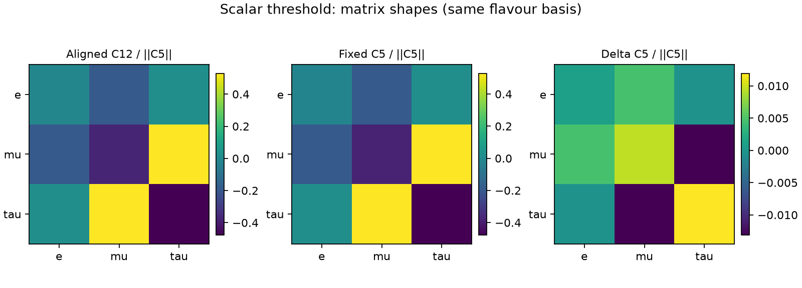
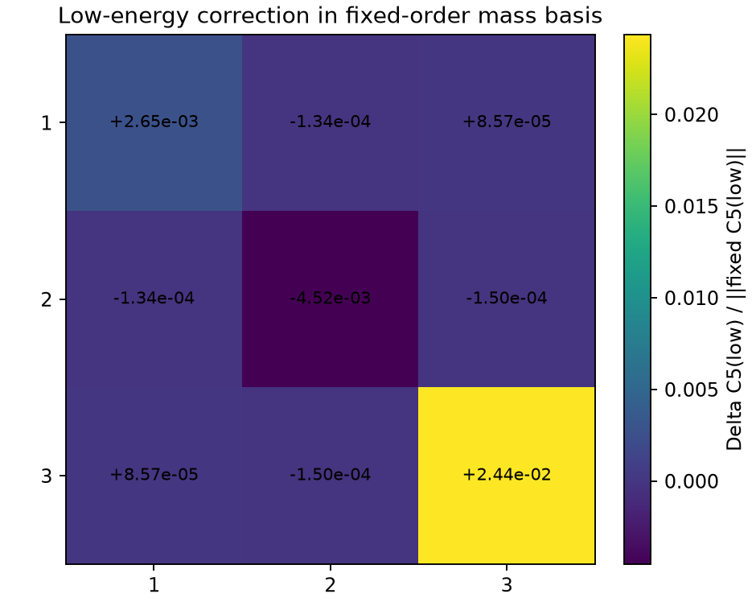

Read-only analysis. No UV evolution, EFT running, fitting or threshold calculation was performed by this script. Saved upstream coupled results remain exploratory, not a validated physical prediction.
Fitted-reference source: Numerical\benchmarks\fitted_reference\T3_dS1_2_dS2_2_dF_1_alpha_m1.json. This historical dataset was generated using its existing running prescription; this diagnostic does not convert it into a UV-frozen study.
| Quantity | Value |
|---|---|
| ||Delta C5|| / ||C5 fixed|| | 0.024925034 |
| Shape residual C12 to fixed C5 | 0.009315366 |
| Shape residual C12 to direct C5 | 0.008299912 |
| Parallel correction scale Re(alpha) | -0.024917835 |
| ||perpendicular Delta C5||/||fixed C5|| | 0.00059900098 |

PMNS eigenvector reproduction error: 3.34e-10. Off-diagonal correction relative to fixed C5: 0.00030927916.

| Angle | Difference (degrees) |
|---|---|
| theta12_deg | 0.0278269 |
| theta13_deg | 0.00890397 |
| theta23_deg | -0.00318496 |
The sign and phase conventions for a Majorana Takagi decomposition must be respected. The mass-basis shortcut is permitted only when the saved real symmetric matrix reproduces |PMNS|. Full RGE/operator closure is not established by this diagnostic.